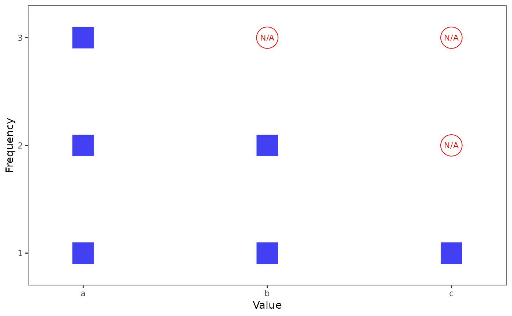
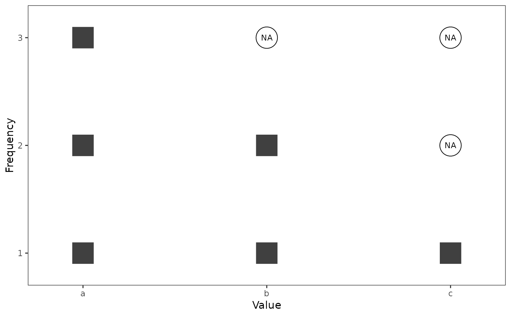

NOTE: This function is currently experimental and shouldn't be relied upon.
Call frequency_grid_plot() to visualize the absolute frequencies of
values in a vector. Each observation is plotted distinctly, resulting in a
hybrid of a histogram and a scatterplot.
Boxes are known values.
Circles with
NAlabels are missing values.Empty circles are no values at all: They signify that certain unique values would have to be more frequent in order for all unique values to be equally frequent.
Usage
frequency_grid_plot(
x,
show_line_grid = FALSE,
show_line_mode = FALSE,
label_missing = "NA",
color_label_missing = "red2",
color_missing = "red2",
color_non_missing = "blue2",
alpha_missing = 1,
alpha_non_missing = 0.75,
size_label_missing = 3,
size_missing = 10,
size_non_missing = 10,
shape_missing = 1,
shape_non_missing = 15,
expand = 0.1
)Arguments
- x
A vector with frequencies to visualize.
- show_line_grid
Logical. Should gridlines be present, crossing at each observation? Default is
FALSE.- show_line_mode
Logical. Should a dashed line demarcate the mode(s) among known values from the missing values that might add to these modes, if there are any? Default is
FALSE.- label_missing
String. Label used for missing values. Default is
"NA".- color_label_missing, color_missing, color_non_missing
String. Colors of the data points. Defaults are
"red2"for missing data points as well as their labels, and"blue2"for non-missing data points.- alpha_missing, alpha_non_missing
Numeric. Opacity of the data points. Defaults are
1and0.75, respectively.- size_label_missing, size_missing, size_non_missing
Numeric. Sizes of the data points. Defaults are
3for the label and10for both symbols.- shape_missing, shape_non_missing
Numeric or string. Signifiers for the shapes of the data points. Defaults are
1(circle) and15(square filled), respectively.- expand
Numeric. Padding whitespace between the axes and the data points. The distance is the same on all four sides due to the grid structure. Default is
0.1.
Value
A ggplot object. To save it, call ggplot2::ggsave().
Limitations
Certain assumptions about missing values are currently hard-coded in the function. In the future, they should become optional. These assumptions are:
All missings represent a known value. For example, in
c(1, 2, NA), theNAis either1or2.The missings are as evenly distributed across known values as possible. Therefore, in
c(1, 2, NA, NA), oneNAis a1and the other one is a2. This is clearly not reasonable as a general assumption. It is derived from moder's way of determining possible extreme cases.
See also
frequency_grid_df(), which forms the basis of the current
function.
Examples
x <- c("a", "a", "a", "b", "b", "c", NA, NA, NA, NA, NA)
# Basic usage:
frequency_grid_plot(x)
# With "N/A" as a marker of missing values
# instead of "NA":
frequency_grid_plot(x, label_missing = "N/A")

# Black and white mode:
frequency_grid_plot(
x, color_label_missing = "black",
color_missing = "black", color_non_missing = "black"
)
